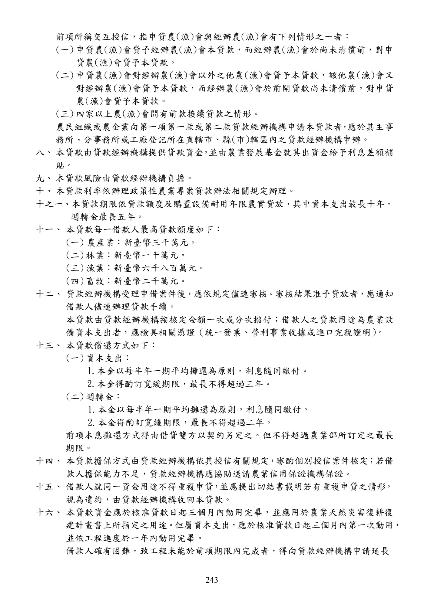

農民組織及農企業天然災害復耕復建貸款
手冊頁：243 PDF頁：245／359
{kind=link}

展開查看PDF原始文字層
複雜表格欄列可能因文字層順序失真，請搭配原頁預覽查閱。
前項所稱交互授信，指申貸農(漁)會與經辦農(漁)會有下列情形之一者： (一) 申貸農(漁)會貸予經辦農(漁)會本貸款，而經辦農(漁)會於尚未清償前，對申 貸農(漁)會貸予本貸款。 (二) 申貸農(漁)會對經辦農(漁)會以外之他農(漁)會貸予本貸款，該他農(漁)會又 對經辦農(漁)會貸予本貸款，而經辦農(漁)會於前開貸款尚未清償前，對申貸 農(漁)會貸予本貸款。 (三) 四家以上農(漁)會間有前款接續貸款之情形。 農民組織或農企業向第一項第一款或第二款貸款經辦機構申請本貸款者 ， 應於其主事 務所、分事務所或工廠登記所在直轄市、縣(市)轄區內之貸款經辦機構申辦。 八、 本貸款由貸款經辦機構提供貸款資金 ， 並由農業發展基金就其出資金給予利息差額補 貼。 九、 本貸款風險由貸款經辦機構負擔。 十、 本貸款利率依辦理政策性農業專案貸款辦法相關規定辦理。 十之一、本貸款期限依貸款額度及購置設備耐用年限覈實貸放，其中資本支出最長十年， 週轉金最長五年。 十一、 本貸款每一借款人最高貸款額度如下： (一) 農產業：新臺幣三千萬元。 (二) 林業：新臺幣一千萬元。 (三) 漁業：新臺幣六千八百萬元。 (四) 畜牧：新臺幣二千萬元。 十二、 貸款經辦機構受理申借案件後，應依規定儘速審核。審核結果准予貸放者，應通知 借款人儘速辦理貸款手續。 本貸款由貸款經辦機構按核定金額一次或分次撥付；借款人之貸款用途為農業設 備資本支出者，應檢具相關憑證（統一發票、營利事業收據或進口完稅證明） 。 十三、 本貸款償還方式如下： (一) 資本支出： 1. 本金以每半年一期平均攤還為原則，利息隨同繳付。 2. 本金得酌訂寬緩期限，最長不得超過三年。 (二) 週轉金： 1. 本金以每半年一期平均攤還為原則，利息隨同繳付。 2. 本金得酌訂寬緩期限，最長不得超過二年。 前項本息攤還方式得由借貸雙方以契約另定之。但不得超過 農業部所訂定之最長 期限。 十四、 本貸款擔保方式由貸款經辦機構依其授信有關規定 ， 審酌個別授信案件核定 ； 若借 款人擔保能力不足，貸款經辦機構應協助送請農業信用保證機構保證。 十五、 借款人就同一資金用途不得重複申貸 ， 並應提出切結書載明若有重複申貸之情形 ， 視為違約，由貸款經辦機構收回本貸款。 十六、 本貸款資金應於核准貸款日起三個月內動用完畢，並應用於農業天然災害復耕復 建計畫書上所指定之用途 。 但屬資本支出 ， 應於核准貸款日起三個月內第一次動用 ， 並依工程進度於一年內動用完畢。 借款人確有困難，致工程未能於前項期限內完成者，得向貸款經辦機構申請延長